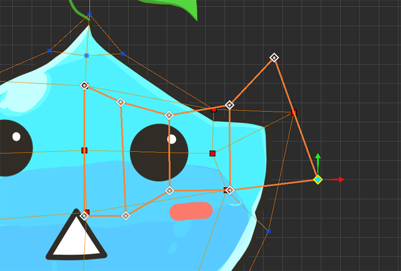
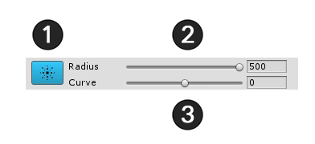

AnyPortrait > 시작하기 > 1.8. 다양한 툴을 사용하여 버텍스 편집하기
1.8. 다양한 툴을 사용하여 버텍스 편집하기
1.0.0
버텍스를 편집하는 모디파이어를 이용할 때, 작업을 도와주는 몇가지 툴이 나타납니다.
이 툴들을 사용하는 방법을 익혀서 더욱 손쉽게 작업을 할 수 있습니다.

Morph 모디파이어로 버텍스를 작업하는 도중이라면 화면 상단에 3개의 버튼이 나타납니다.
1. FFD : Free-Form Deformation 방식으로 버텍스를 제어하는 툴입니다. 제어점이 나타나서 형태를 편집할 수 있습니다.
2. Soft Selection : 버텍스를 선택하고 편집할 때 주변의 버텍스들이 같이 선택되어 완만하게 움직입니다.
3. Blur : 선택된 버텍스들의 모양을 부드럽게 보간합니다.
1. FFD

FFD를 실행하면 기본적으로 9개의 제어점이 나타납니다.
이 제어점은 버텍스 편집할 때와 마찬가지로 이동, 회전, 크기 조절이 가능합니다.

제어점을 움직여서 모양을 바꿀 수 있습니다.
FFD를 이용하면 개략적인 모양을 유지하면서 부드럽게 변형하는 것이 가능합니다.

FFD를 이용하여 작업을 완료한 후에는 이를 적용할 것인지 취소할 지를 결정해야합니다.
1. Apply : 작업한 내용을 적용합니다.
2. Revert : 작업한 내용을 무시하고 되돌립니다.
만약 FFD를 완료하지 않은 상태에서 컨트롤 파라미터를 움직이거나 다른 작업을 했다면 FFD 작업 내역이 사라집니다.
주의하시길 바랍니다.
3x3이 아닌 다른 개수의 제어점을 가지는 FFD를 이용하는 방법

Ctrl 을 누른 상태에서 FFD 버튼을 누르면 FFD의 제어점 개수를 정할 수 있는 다이얼로그가 나타납니다.
(Max OSX에서는 Command 를 누르세요.)

2. Soft Selection

Soft Selection을 실행하면 위와 같은 UI가 나타납니다.
1. Soft Selection 종료 : 활성화된 Soft Selection을 종료합니다. (단축키 : 마우스 우클릭 )
2. Radius : 선택되는 범위를 조절합니다. (단축키 : [, ] )
3. Curve : 주변의 버텍스들이 완만하게 움직이는 정도입니다.

Soft Selection을 이용하면 버텍스 색상을 통해서 어떤 버텍스들이 같이 선택되는지 확인할 수 있습니다.
Move, Rotate, Scale 툴에도 적용이 되니 부드러운 형태를 유지하고 싶을 때 유용하게 사용할 수 있습니다.

Curve값이 낮을 수록 선택한 버텍스에 가까운 곳에 집중적으로 가중치가 높아지고, Curve값이 높을 수록 멀리 있는 곳에도 높은 가중치가 적용이 됩니다.
3. Blur

Blur를 실행하면 위와 같은 UI가 나타납니다.
1. Blur 종료 : 활성화된 Blur를 종료합니다. (단축키 : 마우스 우클릭)
2. Radius : 선택되는 범위를 조절합니다. (단축키 : [, ])
3. Intensity : 버텍스들이 부드럽게 바뀌는 강도를 설정합니다.

Blur를 실행하면 마우스 주위에 Blur 영역이 원으로 나타납니다.
마우스로 문질러주면 변형되었던 값들이 주변 값과 비슷하게 뭉개지는 것을 볼 수 있습니다.
Blur 툴은 주로 버텍스를 일일이 선택하여 작업한 후, 부드럽게 만들때 유용하게 사용될 수 있습니다.

이제 다른 메시들도 Vertical Position 컨트롤 파라미터에 맞게 수정 작업을 해줍니다.
손이 많이 가는 작업이 될 수 있습니다. 부담갖지 마시고 하나씩 해보세요.
다른 메시가 선택이 안된다면?
여러개의 메시를 작업하려다 보면 마우스로 클릭을 해도 선택이 안되는 경우가 있습니다.
화면 하단의 Selection Lock 버튼이 켜져있다면 다른 메시를 선택할 수 없습니다.
Selection Lock 버튼을 누르거나 S 를 눌러서 잠금을 해제하세요.

Selection Lock을 왜 사용해야하나요?
Selection Lock이 꺼져있으면 버텍스를 선택하려 하다가 다른 메시를 선택해버리는 일이 발생하곤 합니다.
마우스로 드래그하여 영역을 만들어 버텍스들을 선택하려고 하면 메시 선택이 해제될 수도 있습니다.
따라서 모디파이어 편집이 시작되면 항상 Selection Lock이 켜진 상태가 됩니다.
단축키인 S 를 활용하시면 편리하게 작업하실 수 있습니다.